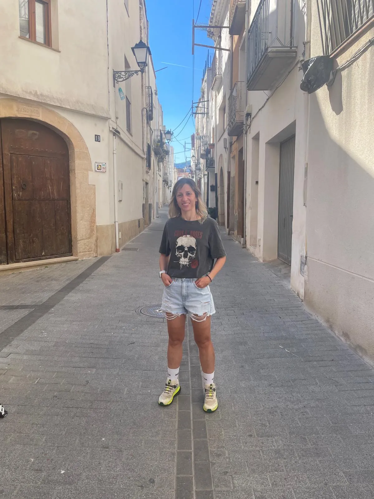

Sobre mi

Soc Mònica Caballer i entenc la teràpia com un espai de trobada, escolta i acompanyament respectuós. M'interessa oferir una atenció propera, humana i adaptada a la realitat de cada persona.
La meva manera de treballar posa especial atenció al vincle terapèutic, a la regulació emocional i a la creació d'un espai segur on poder comprendre el que passa i donar lloc al que es viu.
Treballo especialment en l'acompanyament a adolescents amb dificultats de conducta, en processos de dol i pèrdues, i en intervencions on la natura i el moviment poden formar part del procés.
També incorporo la teràpia assistida amb gossos com una eina valuosa en aquells casos on el vincle, la presència i la interacció poden afavorir la calma, la confiança i l'obertura emocional.
Com entén l'acompanyament terapèutic
L'objectiu d'aquest espai no és només parlar del malestar, sinó trobar una manera de sostenir-lo, entendre'l i transformar-lo. Per això la proposta de la web transmet serenor, natura i calidesa.
La teràpia caminant obre un format diferent, menys rígid i més connectat amb el cos i l'entorn. Pot facilitar la paraula, la respiració i la sensació de procés compartit.